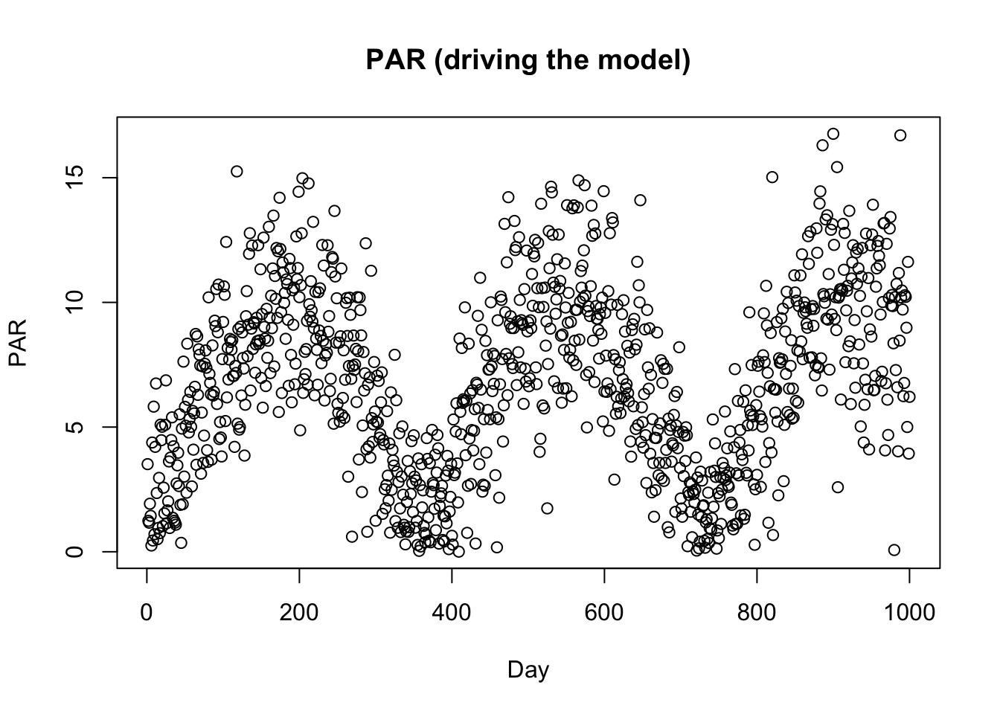
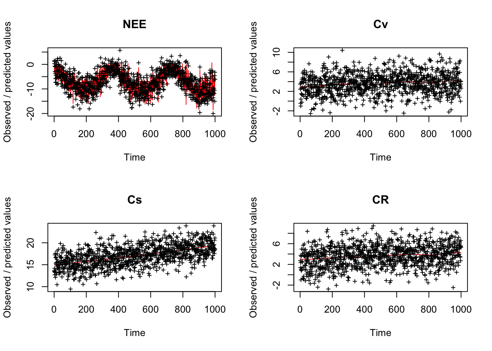

library(BayesianTools)
# Create input data for the model
PAR <- VSEMcreatePAR(1:1000)
plot(PAR, main = "PAR (driving the model)", xlab = "Day")
# load reference parameter definition (upper, lower prior)
refPars <- VSEMgetDefaults()
# this adds one additional parameter for the likelihood standard deviation (see below)
refPars[12,] <- c(2, 0.1, 4)
rownames(refPars)[12] <- "error-sd"
head(refPars) best lower upper
KEXT 0.500 2e-01 1e+00
LAR 1.500 2e-01 3e+00
LUE 0.002 5e-04 4e-03
GAMMA 0.400 2e-01 6e-01
tauV 1440.000 5e+02 3e+03
tauS 27370.000 4e+03 5e+04# create some simulated test data
# generally recommended to start with simulated data before moving to real data
referenceData <- VSEM(refPars$best[1:11], PAR) # model predictions with reference parameters
referenceData[,1] = 1000 * referenceData[,1]
# this adds the error - needs to conform to the error definition in the likelihood
obs <- referenceData + rnorm(length(referenceData), sd = refPars$best[12])
oldpar <- par(mfrow = c(2,2))
for (i in 1:4) plotTimeSeries(observed = obs[,i],
predicted = referenceData[,i], main = colnames(referenceData)[i])
# Best to program in a way that we can choose easily which parameters to calibrate
parSel = c(1:6, 12)
# here is the likelihood
likelihood <- function(par, sum = TRUE){
# set parameters that are not calibrated on default values
x = refPars$best
x[parSel] = par
predicted <- VSEM(x[1:11], PAR) # replace here VSEM with your model
predicted[,1] = 1000 * predicted[,1] # this is just rescaling
diff <- c(predicted[,1:4] - obs[,1:4]) # difference betweeno observed and predicted
# univariate normal likelihood. Note that there is a parameter involved here that is fit
llValues <- dnorm(diff, sd = x[12], log = TRUE)
if (sum == FALSE) return(llValues)
else return(sum(llValues))
}
# optional, you can also directly provide lower, upper in the createBayesianSetup, see help
prior <- createUniformPrior(lower = refPars$lower[parSel],
upper = refPars$upper[parSel], best = refPars$best[parSel])
bayesianSetup <- createBayesianSetup(likelihood, prior, names = rownames(refPars)[parSel])
# settings for the sampler, iterations should be increased for real applicatoin
settings <- list(iterations = 2000, nrChains = 2)
out <- runMCMC(bayesianSetup = bayesianSetup, sampler = "DEzs", settings = settings)
Running DEzs-MCMC, chain 1 iteration 300 of 2001 . Current logp -8566.156 -8499.593 -8507.241 . Please wait!
Running DEzs-MCMC, chain 1 iteration 600 of 2001 . Current logp -8489.945 -8489.103 -8485.902 . Please wait!
Running DEzs-MCMC, chain 1 iteration 900 of 2001 . Current logp -8486.072 -8489.803 -8489.643 . Please wait!
Running DEzs-MCMC, chain 1 iteration 1200 of 2001 . Current logp -8486.468 -8485.746 -8485.014 . Please wait!
Running DEzs-MCMC, chain 1 iteration 1500 of 2001 . Current logp -8485.923 -8491.022 -8486.336 . Please wait!
Running DEzs-MCMC, chain 1 iteration 1800 of 2001 . Current logp -8485.298 -8487.846 -8484.556 . Please wait!
Running DEzs-MCMC, chain 1 iteration 2001 of 2001 . Current logp -8485.874 -8485.425 -8487.278 . Please wait! runMCMC terminated after 1.579seconds
Running DEzs-MCMC, chain 2 iteration 300 of 2001 . Current logp -8561.552 -8563.564 -8569.686 . Please wait!
Running DEzs-MCMC, chain 2 iteration 600 of 2001 . Current logp -8538.887 -8538.977 -8546.54 . Please wait!
Running DEzs-MCMC, chain 2 iteration 900 of 2001 . Current logp -8502.444 -8491.463 -8522.535 . Please wait!
Running DEzs-MCMC, chain 2 iteration 1200 of 2001 . Current logp -8486.893 -8487.119 -8487.553 . Please wait!
Running DEzs-MCMC, chain 2 iteration 1500 of 2001 . Current logp -8487.805 -8486.57 -8484.996 . Please wait!
Running DEzs-MCMC, chain 2 iteration 1800 of 2001 . Current logp -8484.447 -8487.071 -8488.836 . Please wait!
Running DEzs-MCMC, chain 2 iteration 2001 of 2001 . Current logp -8485.458 -8488.215 -8485.654 . Please wait! runMCMC terminated after 1.828seconds